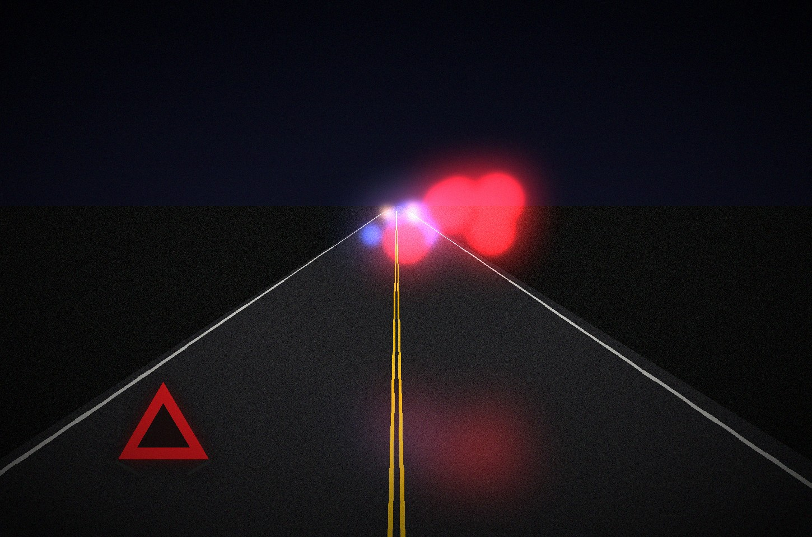

CAPA 1450 × 960 (imagem ilustrativa, sem texto)Baixar

CATEGORIA
Trânsito
CHAPÉU
BR-365 · Patos de Minas
TÍTULO
Colisão seguida de tombamento deixa 2 feridos na BR-365, em Patos de Minas
SUBTÍTULO
Colisão seguida de tombamento aconteceu no km 414, no trecho entre Patrocínio e Patos de Minas; o acidente deixou 2 feridos
CORPO DA MATÉRIA
Um acidente (colisão seguida de tombamento) foi registrado no dia 25/11/2026, por volta das 17h44, no km 414 da BR-365, em Patos de Minas, no trecho entre Patrocínio e Patos de Minas.
De acordo com as informações apuradas, 2 pessoas ficaram feridas.
Por volta das 17h44, logo depois do posto da PRF, perto da Cargill, uma carreta de nove eixos carregada de refrigerantes bateu num Fiat Uno e tombou. O motorista da carreta ficou preso às ferragens, foi resgatado pelos Bombeiros com lesão na perna e levado pelo SAMU ao Hospital Regional. O motorista do carro teve cortes no braço e no joelho. A BR-365 foi totalmente interditada, com desvio pela Estrada da Serrinha.
O trecho não tem concessão e está sob responsabilidade do DNIT, o Departamento Nacional de Infraestrutura de Transportes.
Desde a manifestação de 02/02/2026, o Radar BR-365, painel de acidentes do Movimento BR-365, contabiliza 182 acidentes, 34 mortes e 237 feridos na rodovia, entre Uberlândia e a BR-040. O mapa completo, atualizado várias vezes por dia, está em www.movimentobr365.com.br.
📡 Acompanhe todos os acidentes da BR-365, km por km e atualizados várias vezes por dia, no RADAR BR-365: www.movimentobr365.com.br. Entre, compartilhe e ajude a cobrar a duplicação já.
Tem uma notícia ou presenciou um acidente? Mande para o ZapCoró pelo WhatsApp (34) 92000-2818. E siga o @zapcoro no Instagram para acompanhar as notícias de Coromandel e região.
TAGS
BR-365, acidente, trânsito, Patos de Minas, Radar BR-365, Movimento BR-365, duplicação já, DNIT
FONTE
Patos Hoje (25/11/2026), com PRF e Bombeiros; Patrocínio Online (25/11/2026), com PRF, Bombeiros e SAMU; Patos Agora (25/11/2026); ZapCoró (25/11/2026); Patos Notícias (25/11/2026); Radar BR-365 (www.movimentobr365.com.br)